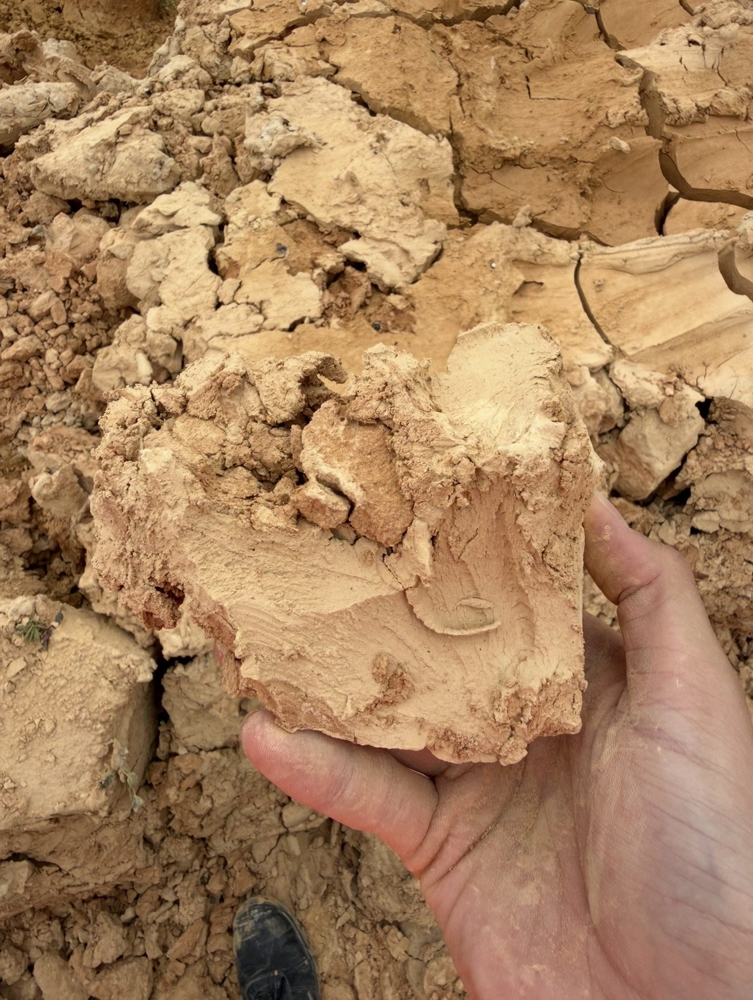

The materials of a region
Atelier LUMA, Arles, summer 2026
Biofabrique LA, founding student researcher
With Professor Jia Yi Gu
What grows and is made around Los Angeles, and who makes it: a method I brought back from a residency in France.
I spent the summer of 2026 in a residency on bioregional materials at Atelier LUMA in Arles: stone, earth and clay, the people who quarry and shape them, and the distances between them.
Back in California, I adapted that work into a method for mapping the material streams, suppliers and craftspeople of Southern California, to find where building and design could source locally.
I do this as the founding student researcher of Biofabrique LA, with faculty from Harvey Mudd, MIT, USC and SCI-Arc, and with researchers at Atelier LUMA.

